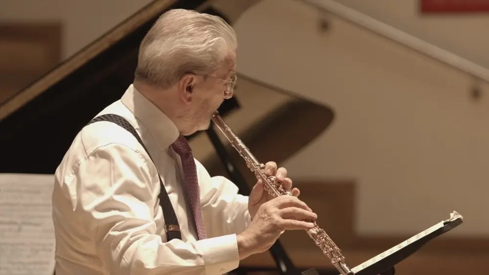
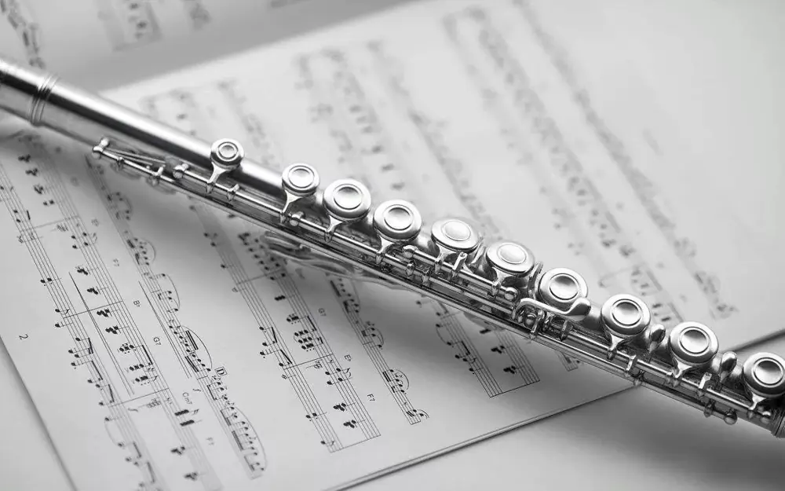
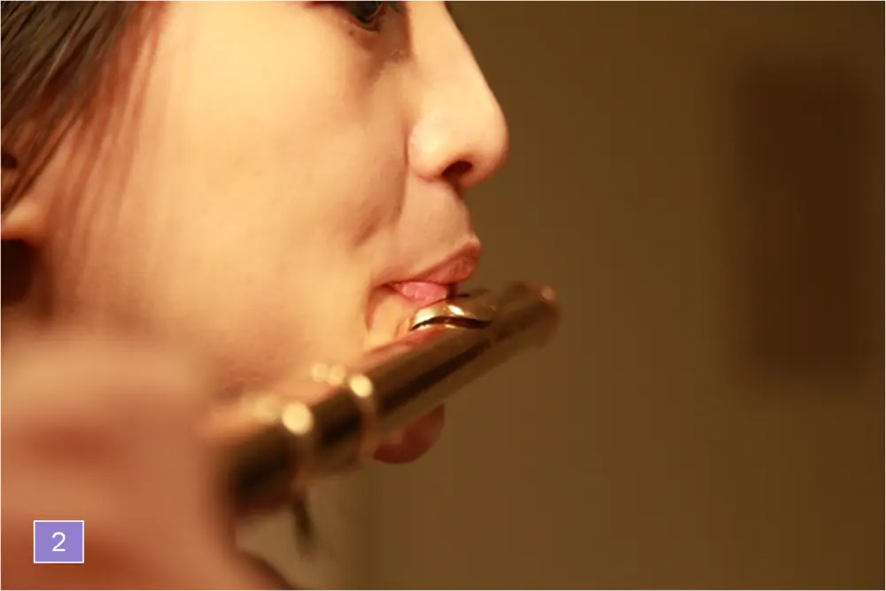

這是舊站 oliverflute.com 的文章，內容保留原貌，只修正排版。其中的考試日期、價錢和課程安排屬寫作當時的資料，請以現行公布為準。
對於大部分初學長笛者來說，如何能盡快掌握基本的吹奏要領，演奏出簡單的樂曲，恐怕是他們最關心的問題。在這樣一種急切的心情下，很多人倉促地入了門，卻因為基礎部分還存在理解上的誤區，影響到後面的學習。這樣的一些誤區從一個方面來說，大大阻礙了我們的學習進程，從另一方面來說，對我們的身體更造成了不必要的負擔，直接影響到健康。所以，在這裡，我想把這些理解誤區總結一下。

一. 關於笛頭
在面對上第一堂課的學生時，我會反復強調練習笛頭的重要性。因為有太多學生認為吹笛頭是一件很枯燥的事情，總是迫不及待地在沒有完全掌握笛頭吹奏的時候就練習整個長笛。我經常打比方，就像去學習駕駛機動車，第一節課老師首先教你熟悉方向盤及剎車油門。他們會告訴你其實握方向盤的姿勢和轉方向盤的速度是非常重要的。當然，如果老師不這麼告訴你，我想他一定算不上是個稱職的老師。那麼，熟悉笛頭也是同樣的道理。為什麼呢？大家都知道，長笛這樣樂器，在演奏的時候，和其它樂器不同的是，演奏者無法看到自己的嘴唇和手指。這樣的話，演奏者在進行手指訓練之前，應該完全掌握嘴唇放在笛頭上的位置、形狀，否則演奏的質量和學習的進度會大打折扣。我的建議：初學者應當在每天保證一定時間的笛頭練習，並且一定要對著鏡子規範自己的嘴型與位置。一直到不用鏡子，嘴唇都能非常準確地找到位置，並且很通暢地發出聲音，再接上笛身。而且對於初學者來說，笛頭練習也是氣息入門的好渠道。正確的笛頭練習，能夠幫助初學者由淺入深地領會氣息的要點。
二. 練習時間
很多人，尤其是孩子的家長認為，練習時間越長越好。其實，我覺得任何一樣樂器入門，都應該給身體和精神一個適應的過程。對於初學的人來說，練習過長，反而會造成太快的疲勞感，從而失去效率，而且頭腦在這種狀態下，對於正確音色及方法的判斷會變得模糊。特別是在學習某個新方法或者技術的時候，應當在時間長度上採取循序漸進的過程。我清楚地記得，在德國學習的時候，我的教授甚至很明確地告訴我，掌握新方法一開始的練習時間不得超過4分鐘。需要補充的是，學習樂器貴在“堅持”。我從來不硬性規定學生每日的練習時間，那是因為現在孩子的功課都很多，倘若練習負擔過重，會造成他們心理和身體上的反感。但是我總是反復強調“堅持”的重要性，也就是說，無論多忙，學樂器的人每天還是應該堅持練習基本功。另外，有些人練琴全憑“心血來潮”，有時候幾天碰都不碰樂器，偶爾練又練到腰酸背疼手抽筋，這樣的練習也是沒有任何益處的。

三. 嘴型
時常有學生問我，吹長笛的嘴型是不是要一直保持“微笑”。我的回答是：吹長笛的嘴型的確類似“微笑”，卻不能就此生搬硬套地以“微笑”作為嘴唇固定的吹奏姿勢。甚至有學生曾經問我，嘴角應該上翹到什麼位置比較合適。我只想說，每個人的身體狀況和條件都是不一樣的，有的人嘴唇厚一些，有的薄一些，有的人牙齒外凸一些，有的向裡凹一些，這些種種的不同，要求我們應該仔細體會試吹和練習時，嘴型的細微變化對聲音造成的影響。沒有什麼固定嘴型的模式。唯一的要領，剛才前面講過，就是初學者一定要對著鏡子練習，多感受，並記住好聲音所使用的嘴型。關於嘴型的入門，我通常只會講幾點：1，蓋住笛嘴三分之一。2，朝吹嘴裡面的前壁呼氣。但是頭不要低下來，平視前方。3，呼氣發“ü（籲）——”這個音，氣速不要過快，但是出氣要有一定力量。（實際上，在發這個音的時候，已經接近“微笑”的表情了）

四. 長音練習
無數次向所有的初學者，還有學了很多年的長笛愛好者提到長音練習的重要性。很多學生練曲子的時候特別來勁，可是對於練長音很提不起精神。實際上，長音練習是最簡單也最有效的基礎練習。眾所周知，管樂是靠氣息來發音的，所以氣息的重要性應該是在其它技術練習的前面。比如說，手指訓練即使方法不完全正確，也是可以通過時間積累的，而氣息練習不從開始就從嚴要求，並且用正確的方法進行練習的話，將來在演奏的道路上，會成為一個巨大的絆腳石。這就是為什麼很多學生雖然手指能夠跑得很快，但是上氣不接下氣，脖子和肩膀很僵硬，乃至背部酸痛，這都是因為氣息的方法沒掌握好，身體沒有在放鬆的狀態下進行演奏。以上是我長笛演奏及教學以來，積累的一些經驗，希望給長笛愛好者，特別是初學者帶來幫助。
如何調節氣流與成聲器的角度？

一種方法是利用下巴（下頜）的輕微前後伸縮來調節唇與吹口的角度：吹高音區或弱奏時，下巴前伸、下唇隨之前移、上下唇趨向對齊，氣流與成聲器接觸的角度變小，近似向前平吹；由於風口隨之變小，吹出的氣流幅度和流量也隨之減小，但氣流的壓力卻相應地增大，同時由於吹口開的較大，因而調節並保持了音準；這時的音色比較明亮、柔和、純淨。
吹低音區或強奏時則正好相反：下巴後縮、下唇隨之後移、上下唇趨向前後錯開，氣流與成聲器接觸的角度增大，近似向下斜吹；由於風口隨之張大，吹出的氣流幅度和流量增大，但氣流的壓力卻相應地減小，又由於吹口蓋的較多，因而調節並保持了音準；這時的音色比較豐滿、厚實、有力。有人把上述前者稱作“弱奏口型”或“高音口型”，把後者稱作“強奏口型”或“低音口型”。如果能注意掌握這兩種口型的連接變化，就會得到音色的變化，豐富表現力，也有利於保持穩定的音準。
另一種方法是上下唇的位置基本不變，只輕微地移動頭部：或向前向下、或向後向上，以改變唇與吹口的角度，來調節氣流與成聲器接觸的角度。它大體上相當於上述的“弱奏口型”，因而音色比較柔和、明亮、統一，但低音區不容易豐滿，音準也不易控制，所以要特別講究氣息的調節。
第三種方法是用轉動笛身來調節吹口的角度。為了保持音準偶一為之未嘗不可，但這可能不是一種較好的辦法。因為移動笛身過多，會影響運指；還有可能影響口型與吹口的關係的穩定，以致防礙了發音。
與氣流角度有關的另一個問題，是唇對氣流的控制。由於長笛的觸點在唇外，因此對於吹奏者來說，唇對氣流的控制，就成為唯一能直接感覺到的觸點。這有點像彈鋼琴：實際的觸點是琴槌對琴弦的敲擊，而人所能控制的觸點，則是手指對琴鍵的觸及。因此，我以為可把唇對氣流的觸及和控制，作為長笛吹奏中的第二個觸點